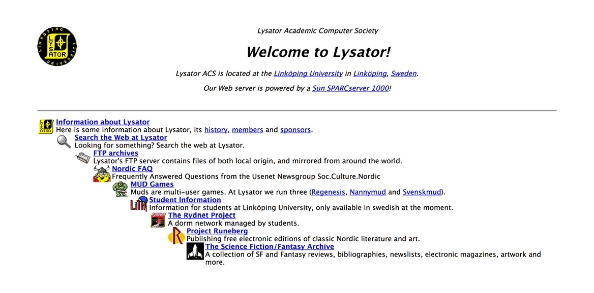

29 oktober 1969 skickas det första meddelandet på det som i dag är internet.
Vid den tiden heter nätverket Arpanet, och drivs av det amerikanska försvaret. I september 1969 länkas Arpanets första dator med en sprillans ny, specialbyggd maskin, en IMP – Interface Message Processor (som ni ser på bilden här ovanför). Och några veckor senare, 29 oktober klockan halv elva på kvällen skickar forskargruppen på UCLA, ledd av professor Leonard Kleinrock, iväg ett meddelande till en dator på Stanford drygt 50 mil därifrån. Det innehåller endast bokstäverna L och O (forskarna hade tänkt skriva LOGIN men servern kraschade).
Arpanet är ett av många nätverk som utvecklas under 60-talet i både USA, England och Frankrike.
Paketutbyte, TCP/IP och tidsdelning
På den amerikanska forskningsmyndigheten ARPA (Advanced Research Projects Agency) jobbar datorforskaren Joseph Licklider. Han är den som kläcker idén till det som blir internet, men det finns många andra på myndigheten som gör betydande insatser för att förverkliga planerna. Leonard Kleinrock uppfinner kommunikationstekniken ”paketutbyte” (packet switching), Vinton Cerf and Robert Kahn kommer på TCP/IP-protokollet (som fortfarande utgör grunden för det internet vi har i dag).
En annan viktig upptäckt är tidsdelningssystemen (time-sharing), som innebär att flera personer kan använda samma dator. Det är ju egentligen det man gör på internet, delar datorer med varandra.
E-posten skapas
1971 skickas det första e-postmeddelandet på Arpanet – från en dator till en annan som står precis bredvid. Fler och fler datorer på amerikanska forskningsanstalter och laboratorium kopplas sedan upp, nätet växer och 1973 är det hela fyrtio datorer uppkopplade.
Nätverket blir internationellt
Samma år kopplas den första utländska datorn upp mot Arpanet utanför USA. Den är norsk och kopplas upp via satellit. Men om vi ska vara lite petiga går faktiskt den första internetkontakten via markstationen i Tanum i Bohuslän, som tar emot signalerna och skickar dem vidare till Norge. Först då blir internet internationellt.
1973 Arpanet blir äntligen ett internationellt nät – via Sverige
Fram till 1973 har Arpanet bara varit en angelägenhet för amerikanska försvaret. Men i och med en koppling till Norge (via Sverige) kan man för första gången tala om ett internationellt nät. Internet, kort och gott.
Arpanet heter datornätverket som kommer att utgöra grunden i det vi numera kallar internet. Till en början är bara ett fåtal datorer inkopplade, men antalet växer i USA i början av 1970-talet.
Det dröjer till den 15:e juni 1973 innan nätet blir internationellt. Den första dator utanför USA som kopplas in på Arpanet är norsk och den nås via satellit. Vad inte alla vet är att Sverige också har en roll i denna internethistoria. Den första internetkontakten går nämligen via markstationen i Tanum i Bohuslän, som sedan skickar vidare signalen till Norge och Norsar (ett forskningscentrum som grundats ihop med USA för att upptäcka jordbävningar och kärnvapenexplosioner).
Därför blir Norge först
Anledningen till att just vårt grannland blir först ut är de goda militära kontakterna norrmännen under dessa kalla krigs-år har med amerikanerna. Månaden efter får även en dator i Storbritannien kontakt med Arpanet.
Namnet internet myntas snart, som vid tiden är en förkortning för ”internetworking”. TCP/IP-skaparen Vint Cerf skriver internet i en text 1974 och det anses vara då ordet kommer till faktiskt användning för första gången.
1983 Sveriges första mejl lyder: ”Hello”
Två minuter över två på eftermiddagen, den 7 april 1983, tar datateknikern Björn Eriksen emot det som anses vara det första mejlet över internet till Sverige.
Det kommer från Amsterdam och Jim McKie på European Unix Network. Innehållet är kanske inte så spännande – det är bara ett besked om att det är ett testmejl – men det är ändå ett historiskt ögonblick. Trettio år senare har nästan nittio procent av landets befolkning tillgång till internet och e-post.
Hela mejlet:
SWE_Mail
Return-Path:
Date: Thu, 7 Apr 83 14:02:08 MET DST
From: mcvax!jim (Jim McKie)
To: enea!ber
Subject: Hello
You are now hooked to the mcvax. This is just a test. Reply, we will be calling you again soon!
Ignore any references to a machine called ”yoorp”, it is just a test. Mail should go to mcvax!….”.
Regards, Jim McKie. (mcvax!jim).
Rent tekniskt har Björn tagit emot mejlet med en VAX 780 med operativsystemet BSD Unix, som är placerad hos programutvecklingsföretaget Enea Data AB i Täby. E-posten förmedlas med UUCP och X.25 (och inte via internetprotokollet TCP/IP, vilket gjort att vissa ifrågasätter om mejlet verkligen kan sägas vara det första via just ”internet”). E-post har vid tidpunkten även tidigare skickats från Sverige, via KOM-systemet 1982, men via brygga (och även då med X.25-tekniken).
Björn Eriksen registrerade några år senare .se-domänen och sköter den fram till 1997. Han går bort 2005. Här kan du se en film där hans vänner och kollegor berättar om hans gärning:
1993 Här är Sveriges första webbsida

Webbläsaren Mosaic släpps 1993 av amerikanska NCSA, och även om den inte är den allra allra första så är det den som kommer att göra www tillgängligt för gemene man. Den är också en av de första som kan visa bilder, vilket gör internet lite roligare att surfa på.
Vid Linköpings Universitet finns en datorförening som heter Lysator, som går igång på nyheten och genast tar tillfället i akt att bygga sin egen server – den första i Sverige som registreras hos CERN, i februari 1993. Där lägger de förstås också en egen hemsida.
lysator.liu.se är adressen då – och den finns fortfarande kvar! Där kan du hitta massvis med information om föreningens historia.
Lysators servrar är för övrigt också hem till Projekt Runeberg, där du kan hitta klassisk nordisk litteratur digitaliserad och gratis.
2003 3G: Mobilsurfens förutsättning
Vanlig 2G (GSM) får inte fart på mobilsurfande. Men med en ny teknik erbjuds effektiv och billig mobil uppkoppling. W-CDMA är tredje generationens mobilnät, eller i folkmun: 3G.
Skillnaden mellan 2G och 3G är framförallt hastigheten. Nu kan man ta emot bilder och titta på strömmade film från sin mobil. 3G har därför kallats ”mobilt bredband”. 2006 kommer överföringshastigheten upp i 7,6 megabit per sekund.
Först med 3G är japanska NTT Docomo redan 2001, som då tror att videosamtal ska bli poängen med tekniken. Istället är det surfande, spelande och rörliga bilder som visar sig vara poängen. 2003 lanseras 3G i Sverige, då också de första 3G-telefonerna släpps i butik.
Systemet möjliggör också för de smarta telefonerna, och den andra generationens Iphonen (som lanseras 2008) kallas Iphone 3G. Den första modellen har inget 3G-stöd
2013 Edward Snowden avslöjar amerikansk massövervakning
Storebror ser dig, skrev George Orwell i boken 1984. År 2013 avslöjas profetian som ett faktum. Amerikanska myndigheter har haft fullständig koll på allas kommunikation online.
Våren 2013 avslöjar tidningarna The Guardian och Washington Post att den brittiska och amerikanska underättelsetjänsten i många år bedrivit en omfattande övervakning av trafiken på internet. Det rör sig om allt från mejl, till personliga foton och telefonsamtal, till chattar i dataspel. Allt går att spåra i realtid. Även svenska användare, som använder utländska tjänster, finns med i resultaten.
Programmet som används heter Prism, och innehåller bland annat allt information som går via internetjättarna Microsoft, Yahoo, Facebook, Google och Apple. Det framgår även att underrättelsetjänsterna spanat på utländska toppolitiker som Tysklands förbundskansler Angela Merkel. Något som ägt rum sedan nya lagar stiftades i spåren av 11 september 2001.
Källan till tusen och åter tusen läckta dokument är en konsult på amerikanska underrättelsetjänsten NSA: 30-årige systemadministratören Edward Snowden . Amerikanen hade redan i december året innan kontaktat journalisten Glenn Greenwald, som han väljer att läcka till efter att ha läst en artikel skriven av denne i nättidningen Salon.
I maj blir Snowden tillfälligt sjukskriven på NSA för behandling av epilepsi. Han ger sig av, packar fyra bärbara datorer och en stor mängd topphemliga dokument. Samma månad intervjuas han för tyska Der Spiegel, som publicerar artikeln ett par månader senare. Edward Snowden far till Hongkong och vidare därifrån till Moskva, där han beviljas asyl.
2014 tilldeles Edward Snowden “det alternativa nobelpriset” The Right Livelihood Award. Samma år gör ha även ett första (och hittills enda) framträdande i Sverige på Internetdagarna. Hans visselblåsande är en viktig milstolpen i debatten om personlig integritet på nätet, och han är hyllad av många men också kritiserad av amerikanska politiker och myndighetsutövare som anser att han förrått sitt land.
I april 2019 kommer uppgifter att NSA vill avsluta övervakningen. Logistiken väger tyngre än förtjänsten, motiveras förslaget.